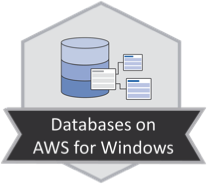
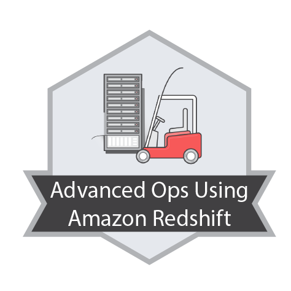

Jordi Isidro Llobet
Business Intelligence enthusiast.
I have been moving around the world of BI for more than 10 years. Since I discovered the databases in the career I knew I wanted to work with them. In EADA, the first company where I worked, I started to do a database migration project, and in 2005, I was offered to design the company's data warehouse. From there I have been chaining projects, always in the BI sector, usually with Microsoft technologies, but also with other proprietary technologies such as SAP Business Objects, Tableau, Redshift or open source such as Pentaho or Jaspersoft.
I also try not to disconnect from classic programming, either in Java or Python.
I have a blog eljordifabi.tech , focused mainly on SQL Server, where I am writing the things that I am learning and that I tkink seem useful. The blog is mainly focused on a project in BIML to automatically generate code to download data from various data sources to a staging area using SSIS.
Currently I am BI architect at Birchman consulting.
Experience
Birchman group
BI Technical reference within Birchman.
Preparation of customer demos in the Microsoft ecosystem (SQL Server, Power Pivot, Power BI)
BI Architect displaced to the client's offices. The main functions developed are:
- SQL Server performance control.
- Definition of data structures.
- Analysis, design and implementation of datamarts.
- Implementation of ETLs for data loading (SSIS 2008 R2 and 2014).
- Implementation of reports (BO 3.1 and 4.1).
- Training Business Objects users (3.1 and 4.1).
- Migration of SQL Server 2008 R2 2014.
- Implementation of features in AWS (S3, EMR, Redshift)
- Implementation of control systems, development automation and code audit
Birchman group
BI Technical reference within Birchman.
Preparation of customer demos in the Microsoft ecosystem (SQL Server, Power Pivot, Power BI)
Training for new consultants in Birchman.
Consultant displaced to client offices, some of them traveling abroad (South Africa, United Kingdom). The main functions developed have been:
- Implementation of ETLs for data loading (SSIS 2008 R2)
- Implementation of reports (SSRS 2008 R2 and BO XI R2)
- Migration of a system in ACCPAC to BPC (SSIS 2018 + BPC connectors)
- Download data from SAP/R3 to SQL Server (Theobald ERP Connect)
 Icnet Consulting
Icnet Consulting
Consultant displaced to client offices. The main functions developed have been:
- Implementation of ETLs for data loading (SSIS 2000 and 2008 R2)
- Creation of cubes (SSAS 2008 R2)
- Implementation of reports (SSRS 2008 R2 and BO XI R2)
- Migration from SQL Server 2005 to 2008 R2
Icnet Consulting
Consultant displaced to client offices. The main functions developed have been:
- Implementation of ETLs for data loading (SSIS 2000 and 2008 R2)
- Creation of cubes (SSAS 2008 R2)
- Implementation of reports (SSRS 2008 R2 and BO XI R2)
- Migration from SQL Server 2000 to 2008 R2
Escola d'Alta Direcció i Administració
Implementation of the EADA data warehouse using Oracle PL \ SQL.
Recreation of the reporting system using JasperReports and OpenReports.
Escola d'Alta Direcció i Administració
Helping migrating the operating system from an HP3000 to Oracle 9.i
Helping in the implementation of the web through cforms.
Starting the implementation of the data warehouse and reporting system.
Education
Computer science
- Software engineering and databases
- Information management and exploitation
Complementary Education
Qwiklabs - Digital media
Qwiklabs - Websites & Web Apps
Qwiklabs - Compute & Networking
Qwiklabs - Big Data on AWS
 Qwiklabs - Databases on AWS for Windows
 Qwiklabs - Advanced Operations Using Amazon Redshift
Qwiklabs - Big Data on AWS (beginer)
Qwiklabs - Security on AWS
Udemy - Taming Big Data with Apache Spark and Python - Hands On
Complete Python Bootcamp: Go from zero to hero in Python
QlikView Developer: Certificado Desarrollador QlikView!
Big Data Hadoop - The Complete Course
 Uso de tableau desktop
Uso de tableau desktop
Diagnóstico y resolución de problemas de rendimiento en SQL Server
Planes de ejecución en SQL Server
Certifications
Microsoft Certified Solutions Expert (MCSE)
Microsoft Certified Solutions Expert (MCSE)
Microsoft Certified Solutions Associate (MCSA)
Microsoft Certified Professional (MCP)
Microsoft Certified Technology Specialist (MCTS)
Congresses
SQL Saturday
--
As an assistant I aim to go to, as a minimum, an annual conference, such as the Barcelona Big Data Congress , forum BARC, Big Data Spain or SQL Saturday .
Awards
- JasperReports Report of the Month - May 2007
Languages
- Catalan: Native language
- Spanish: Native language
- English: upper intermediate. For work reasons I must communicate regularly in English with users and other providers.
Projects
Apart from the work projects I have developed other projects, usually to be prepared for the new technologies that are appearing or I may need.
ADEU-BIML
Android shopping list
Business Intelligence System for Household Finances
- ETL: Pentaho Data Integration, Talend Open Studio
- Reporting: Open Reports, BIRT
- Analisis: Mondrian, Jpivot
- Balanced scorecard: HTML5, Rgraph
- Portal: J2EE
Business Intelligence
- SQL Server 2000, 2008 R2, 2012, 2014 - High level
- SAP Business Objetcts: Xi R2, 3.1, 4.1 - High level
- Tableau: 9, 10 - Medium level
- Amazon EMR, Redshift - Basic level
- Pentaho: Data Integration, Mondrian, Reporting - Basic level
- Talend Open Studio - Basic level